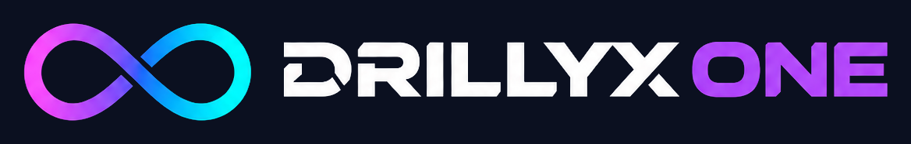
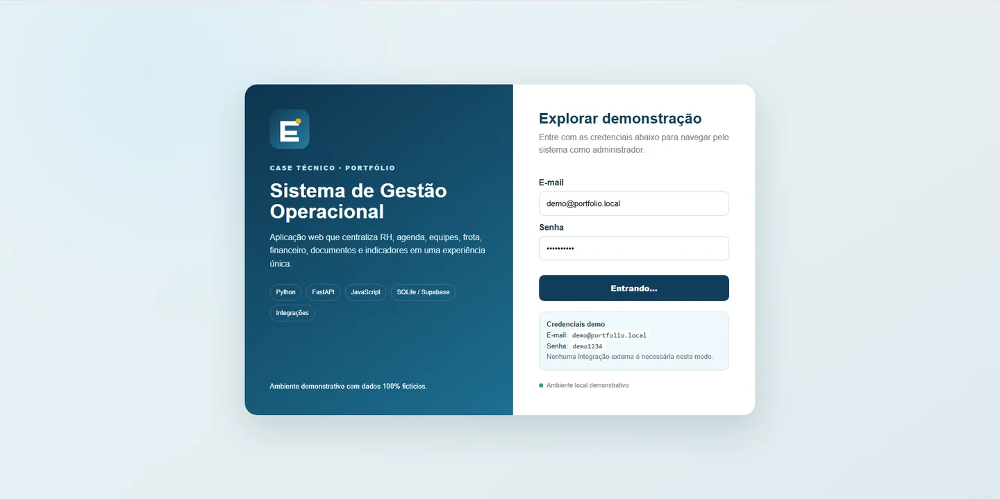

Sistemas sob medida
Plataformas, painéis e ferramentas desenvolvidas para os fluxos reais da sua empresa.
↗
Iniciar projeto ↗Da ideia à execução. Criamos sistemas, automações e experiências digitais para transformar processos complexos em soluções simples e eficientes.
Não entregamos apenas telas ou código. Criamos ferramentas que fazem a operação funcionar melhor.
Plataformas, painéis e ferramentas desenvolvidas para os fluxos reais da sua empresa.
↗Menos trabalho repetitivo. Mais tempo para as decisões que realmente importam.
↗Exploramos aplicações práticas de inteligência artificial para melhorar rotinas e análises.
↗Experiências visuais rápidas, responsivas e desenhadas para valorizar seu negócio.
↗Planilhas inteligentes, dashboards e organização da informação para decisões melhores.
↗Tem um processo difícil de resolver? Vamos entender o problema antes de escolher a tecnologia.
Conversar sobre um projeto ↗Cada projeto resolve um desafio diferente. Explore as experiências e a abordagem por trás delas.
Presença digital com apresentação elegante e foco na experiência do visitante.
Experiência comercial voltada à apresentação de serviços e à conversão.

Sistema web para operações, equipes, RH, frota e financeiro. Explore a demonstração pública com dados fictícios.
Elizabete Prado e Shopping Náutico: prévias carregadas a partir dos sites publicados. Sistema de Gestão: captura real da demonstração pública. No plano gratuito, o primeiro acesso pode levar alguns instantes.
Uma boa solução tecnológica não precisa parecer complicada. Nosso trabalho é conectar estratégia, desenvolvimento e experiência para fazer a tecnologia trabalhar a seu favor.
Ouvimos seu desafio e descobrimos onde a tecnologia pode gerar valor.
Conte o que você precisa. Vamos pensar juntos na melhor maneira de transformar essa ideia em realidade.